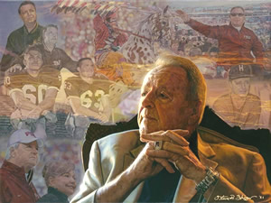

01
College Sports
Collegiate athletics rendered in super-realism — the coaches, the players, and the moments that define a program. Steve is the first African American to complete artwork sanctioned by the University of Alabama.
The Collections
Explore Steve Skipper's work across sports, faith, history, portraiture and equine fine art.
01
Collegiate athletics rendered in super-realism — the coaches, the players, and the moments that define a program. Steve is the first African American to complete artwork sanctioned by the University of Alabama.

02
Professional football at full speed. Steve's work has been recognized by NFL legends Bart Starr, Ozzie Newsome, Ken Stabler and Doug Williams.

03
The subject matter at the center of Steve's calling. “Our motivation is the high Calling and Gifting of our Lord and Savior Jesus Christ and our drive and determination to never be disobedient to His heavenly vision.”

04
Historical work recognized by Civil Rights icon Ambassador Andrew J. Young.

05
Steve is the first African American to complete artwork sanctioned by NASCAR — capturing the drivers, the machines, and “complex diversities of anatomy from human to animal and even to race car.”

06
International equine competition rendered in oil and graphite. “Horses are universally loved sculptured masterpieces from the creative hands of God.”
“The wonderful creation of a horse by God is a tremendous blessing to all who see it. Majesty shows the elegance of this beautiful creation in intricate and wonderful detail in Pencil.”
Proceeds from the original horse paintings and limited editions fund fine-art scholarships through the Anointed Homes Art Foundation.

07
“Accepting the challenge of expression on the faces, in the eyes and body language.” Commissioned and collected portraiture in the super-realist style.

08
Steve's artwork reproduced on collectible drinkware — an accessible entry point to the collection.
The Print Shop
Original paintings, lithographic and giclée prints on exquisite acid-free papers or canvas — all materials guaranteed to be of the highest quality.
Shop Available PrintsSizes, editions, availability and pricing are managed in the official store.